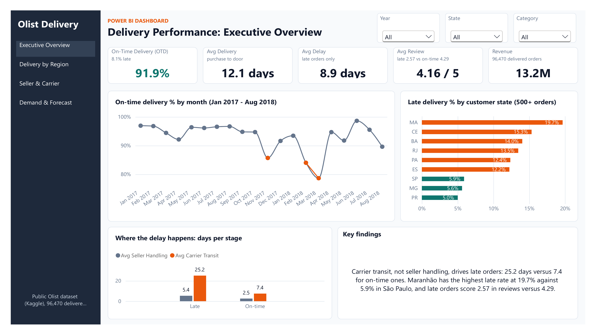
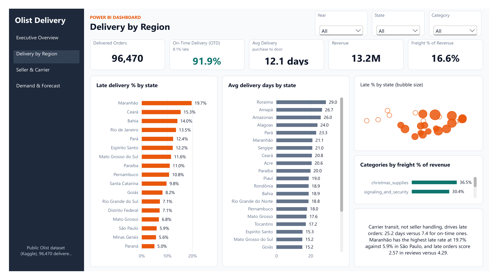
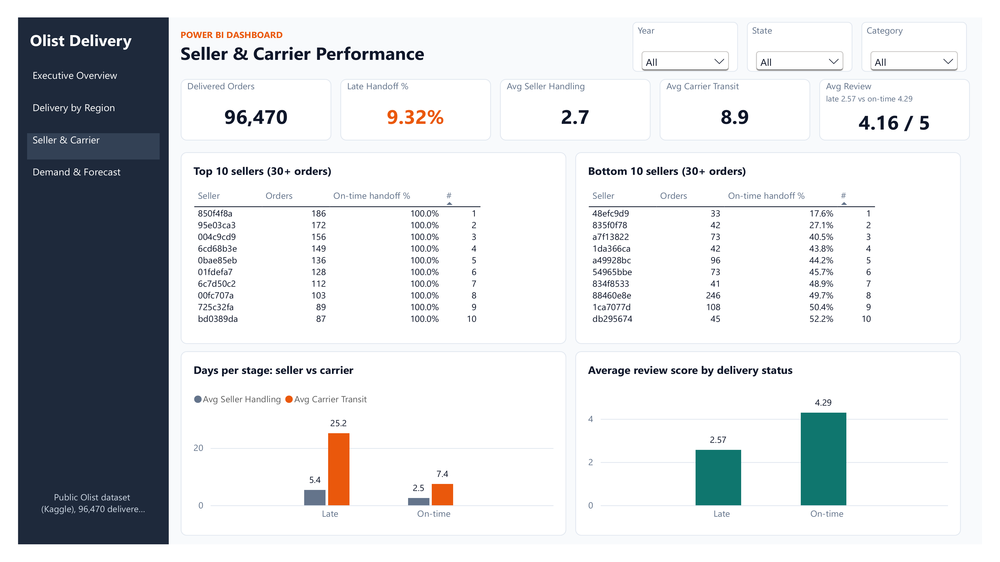
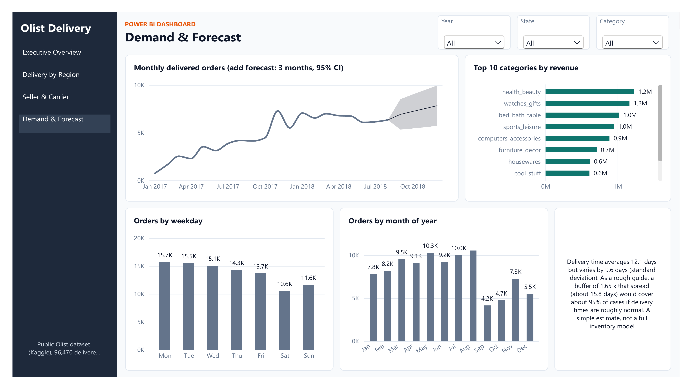

Project overview
The business question: where is delivery performance breaking down, and is the cause the seller or the carrier?
What I built
- A 4-page interactive report with a shared sidebar and three slicers (Year, State, Category) that filter every page.
- 45 live DAX measures. Nothing on the dashboards is a hard-coded number.
- A relational model over the nine Olist source tables, with the raw tables left untouched.
- A three-way reconciliation of the headline numbers (see Method).
Headline finding
Carrier transit, not seller handling, drives late orders: 25.2 days in transit for late orders against 7.4 for on-time ones. Sellers take 5.4 days on late orders versus 2.5 on time. Late orders also score far lower in reviews (2.57 versus 4.29).
KPI definition: OTD is the share of delivered orders that arrived on or before the estimated delivery date. It is OTD, not OTIF, because the dataset has no in-full information.
Executive Overview
Question it answers: how are we doing overall, when did it go wrong, and at which stage of the journey is the delay?

What is on the page
- Five KPI cards: OTD, average delivery, average delay, average review, revenue.
- On-time delivery by month, January 2017 to August 2018. The three lowest months are highlighted in orange.
- Late delivery % by customer state, only for states with 500 or more orders. The six worst are orange, the best three teal.
- Days per stage: seller handling versus carrier transit, split into late and on-time orders.
- A key-findings text box generated by a DAX measure, so it updates with the slicers.
What it shows
- Overall OTD is 91.9%, but monthly OTD dipped close to 80% in the weakest month.
- Maranhão has the highest late rate at 19.7%, followed by Ceará (15.3%) and Bahia (14.0%). São Paulo is at 5.9%.
- The gap sits in transit: 25.2 days for late orders against 7.4 for on-time. Seller handling differs by only about three days.
Delivery by Region
Question it answers: which states are slow or late, and where is freight eating the margin?

What is on the page
- KPI row: delivered orders, OTD, average delivery, revenue, freight as a share of revenue (16.6%).
- Late delivery % by state (17 states with 500+ orders) and average delivery days by state.
- A bubble map of late % by state. Bubble size is the late rate.
- Categories ranked by freight as a share of revenue.
What it shows
- The slowest deliveries are in the north: Roraima 29.0 days, Amapá 26.7, Amazonas 26.0. The south-east is far faster.
- Freight is 16.6% of revenue overall, but some categories are far heavier, such as christmas_supplies (36.5%) and signaling_and_security (30.4%).
- Late rate and delivery time do not rank states identically, so both views are kept.
The map is a scatter-plot bubble map using approximate state-capital coordinates (checked against IBGE data, all 27 within about 0.1 degree). Built-in map visuals depend on Bing Maps, which is being retired.
Seller & Carrier Performance
Question it answers: who hands orders to the carrier late, and does the problem sit with sellers or with the carrier?

What is on the page
- KPI row: delivered orders, late hand-off % (9.32%), average seller handling (2.7 days), carrier transit (8.9 days), average review.
- Top 10 and bottom 10 sellers by on-time hand-off. Only sellers with 30+ orders are ranked, so small samples cannot top the table.
- Days per stage and average review score, each split by late versus on-time.
What it shows
- The ten best sellers all hand over on time (100%), including sellers with 150+ orders.
- The ten worst range from 17.6% to 52.2% on-time hand-off. One of them handles 246 orders at 49.7%, a high-volume problem worth acting on.
- Late orders score 2.57 in reviews versus 4.29 on time, so lateness has a clear customer cost.
Sellers are shown by the first 8 characters of their ID (unique across all 3,095 sellers) to keep the tables readable. Ranking ties are broken by order volume.
Demand & Forecast
Question it answers: how is demand trending, which categories earn the revenue, and how much buffer does variable delivery time require?

What is on the page
- Monthly delivered orders with a 3-month forecast and a 95% confidence band.
- Top 10 categories by revenue.
- Orders by weekday and orders by month of year.
- A safety-stock note calculated by DAX from the delivery-time spread.
What it shows
- Monthly orders grew steadily through 2017 and flattened in 2018. The forecast band is wide, so it is a rough guide.
- health_beauty and watches_gifts lead revenue at about 1.2M each, followed by bed_bath_table and sports_leisure at about 1.0M.
- Mondays are the busiest day (15.7K orders) and Saturdays the quietest (10.6K).
- Delivery time averages 12.1 days with a standard deviation of 9.6. For a 95% service level, plan about 15.8 extra days (1.65 x standard deviation).
Read the month-of-year chart with care: January to August include two years of orders, September to December only one, so the totals are not like-for-like and the autumn drop is partly a data-coverage effect.
Method and verification
Every headline number was checked three independent ways before the dashboard was called done.
How the numbers were checked
- A: the report model, as shown on the dashboard.
- B: independent DAX written directly against the untouched raw tables.
- C: Python on the original CSV files.
Data handling
- Nine Olist source tables (Excel) are loaded as raw tables and never edited.
- Only delivered orders are analysed. Reviews: 99,224 raw rows became 95,824 clean rows (2,849 orders not delivered, and 551 repeat reviews averaged per order).
- States, months and categories need 500+ orders to be ranked (17 of 27 states, 20 of 23 months, 26 of 74 categories qualify).
| Metric | A. Report model | B. Raw-table DAX | C. Python on CSV | Status |
|---|---|---|---|---|
| Delivered orders | 96,470 | 96,470 | 96,470 | MATCH |
| On-time delivery (OTD) | 91.888% | 91.888% | 91.888% | MATCH |
| Average delivery days | 12.0936 | 12.0936 | 12.0936 | MATCH |
| Average delay, late orders (days) | 8.8669 | 8.8669 | 8.8669 | MATCH |
| Revenue | 13,220,248.93 | 13,220,248.93 | 13,220,248.93 | MATCH |
| Freight cost | 2,198,145.90 | 2,198,145.90 | 2,198,145.90 | MATCH |
| Freight % of revenue | 16.627% | 16.627% | 16.627% | MATCH |
| Average review score | 4.1562 | n/a | 4.1562 | MATCH |
| Seller late hand-off % | 9.32% | n/a | 9.32% | MATCH |
Full table: docs/reconciliation.csv. Queries: docs/verification_queries.dax.
A sample of the DAX
Late Delivery % =
AVERAGE(orders[Is Late])
Seller Rank (Top) =
IF([Seller Orders] >= 30,
RANKX(FILTER(ALLSELECTED(sellers[Seller Short]), [Seller Orders] >= 30),
[Seller Rank Key], , DESC, DENSE))
Late Rank (500+ States) =
IF([Delivered Orders] >= 500,
RANKX(FILTER(ALLSELECTED(customers[customer_state]), [Delivered Orders] >= 500),
[Late Delivery %], , DESC, DENSE))All 45 measures: docs/measures.dax. Model notes: docs/MODEL_NOTES.md.
Explore the project
In this repository
powerbi/: the Power BI project (PBIP format, readable text files).data/: the nine Olist source Excel files.docs/: DAX measures, verification, model notes, theme.images/: the four dashboard pages in 4K.Olist_Dashboard.pdf: the report as a PDF.
To open the report
- Open
powerbi/Olist_Delivery_Dashboard.pbipin Power BI Desktop (enable the Power BI Project preview feature first). - Point the data sources to your local copy of
data/under Transform data, then Data source settings. - Refresh.